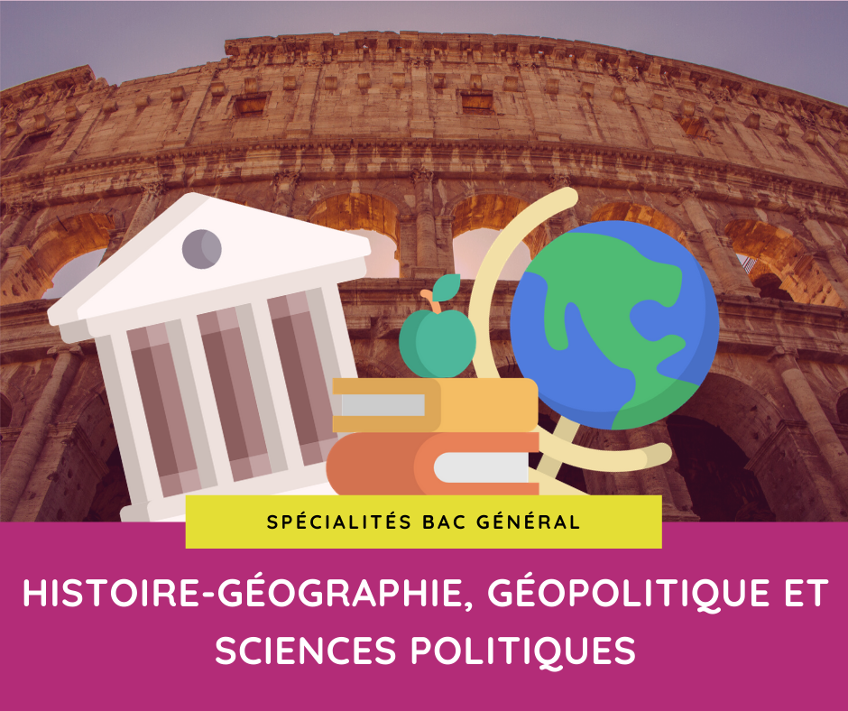

Pour plus d'informations, cliquez sur les images.
NSI :
- La spécialité numérique et sciences informatiques vous plaira si vous aimez comprendre comment
les choses fonctionnent.
-
Si vous vous intéressez à l’univers de l’informatique
et du numérique, et si vous aimez relever des challenges (seul ou à plusieurs).
Cette spécialité a pour objectif de bien comprendre les concepts
et méthodes qui sont à la base de l’informatique.
SVT :
-
La spécialité sciences et vie de la Terre (SVT) vous est destiné si vous aimez découvrir ce qui se passe à l’intérieur d’un être vivant.
-
Si vous désirez comprendre comment fonctionne un écosystème ou si vous souhaitez découvrir ce qui fait "vivre" la planète Terre.

Mathématiques :
-
Si vous aimez chercher des solutions, réfléchir, ou si, tout simplement,
vous vous orientez vers une filière qui demandera de connaître les outils des mathématiques
alors la spécialité mathématiques sera indispensable.
-
La spécialité mathématiques en première permet d’approfondir les acquis de seconde tout en préparant ceux de terminale.
-
On y étudie les statistiques, probabilités, fonctions (dont exponentielle) avec la dérivation comme moyen efficace d’étude.

Physique-Chimie :
-
Si vous aimez les sciences et aspirez à une carrière scientifique, que ce soit la médecine, la recherche,
l’ingénierie ou l’aéronautique, cette matière set faite pour vous.
-
Si vous désirez comprendre comment fonctionne un écosystème ou si vous souhaitez découvrir ce qui fait "vivre" la planète Terre.
SES :
-
La spécialité sciences économiques et sociales (SES) vous plaira si vous avez aimé le cours de SES en seconde.
-
Si vous voulez approfondir vos connaissances en sciences économiques et en sciences politiques, vous êtes la bienvenue.
-
On y étudie les statistiques, probabilités, fonctions (dont exponentielle) avec la dérivation comme moyen efficace d’étude.
SI :
-
La spécialité sciences de l’ingénieur (SI) est un choix à considérer si vous avez imaginé des solutions innovantes pour faire évoluer la société.
-
Vous y apprendrez à concevoir ce genre de produits, en mêlant les dimensions matérielles et numériques.
LLCE :
-
Si vous aimez apprendre les langues et vous intéresser à d’autres cultures,
vous devriez opter pour la spécialité langues, littératures et cultures étrangères (LLCE).
-
Grâce à cette spécialité, vous aurez l’occasion d’utiliser davantage la langue et vous pourrez mieux comprendre son fonctionnement.
-
La langue sera pour vous un outil pour communiquer, découvrir et analyser des documents très variés.
HLP :
-
La spécialité humanités, littérature et philosophie (HLP) s’adresse aux élèves curieux,
qui aiment ouvrir leurs horizons, penser plus large, plus haut, plus profond et plus fin.
-
Si vous vous reconnaissez dans ce portrait, vous y trouverez de quoi vous épanouir, de quoi nourrir vos goûts et diversifier votre culture.

HGGSP :
-
La spécialité histoire-géographie, géopolitique et sciences politiques (HGGSP) s’adresse aux élèves qui aiment comprendre le monde
, suivent l’actualité et s’intéressent à la complexité des relations internationales.
-
Elle permet de s’ouvrir à toutes sortes de milieux : journalisme, tourisme, économie, environnement, droit, etc.
-
Suivre HGGSP est aussi une bonne opportunité d’ouvrir son champ de réflexion et sa culture générale.